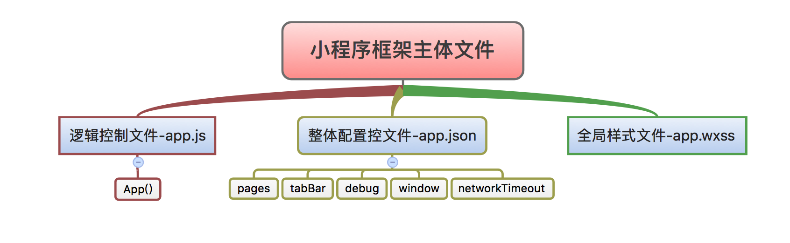
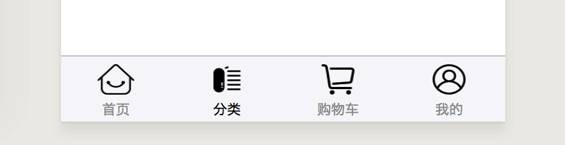

微信小程序基础[03]-小程序框架系统级文件
本文介绍开发微信小程序项目中的主体文件，这些文件的作用，以及具体的配置字段。
1.0 配置文件(app.json)
app.json文件说明
该文件是小程序的配置文件，编写的时候需要严格遵循json的格式规范(关于JSON的知识点请参考javaScript系列 [05]-javaScript和JSON)，在程序加载的时候负责对小程序的全局进行配置，配置项如下：
☑︎ page:设置页面路径。
◻︎ tabBar:设置tab的表现。
◻︎ window:设置默认页面的窗口表现。
◻︎ networkTimeout:设置网络超时时间。
◻︎ debug:设置是否开启debug模式，可选项为true或false，默认关闭。
列出app.json文件内容的整体结构
1 | { |
pages配置项
pages配置选项负责注册小程序的页面，是必须要填写的，当我们使用开发工具来创建页面的时候默认会自动生成对应的配置信息。
pages配置项的value值是一个包含多有页面路径的数组，用来指定小程序由哪些页面构成，其中每一项均有“路径+文件名”组成，下面给出示例：
1 | { |
window配置项
window配置项负责设置小程序状态栏、导航条、标题、窗口背景色等系统级样式。
navigationBarBackgroundColor 导航栏背景颜色 [HexColor类型]
navigationBarTextStyle 导航栏标题颜色 [String类型],black或white(默认)
navigationBarTitleText 导航栏标题文字内容 [String类型]
navigationStyle 导航栏样式 [String类型]，default(默认)或custom
backgroundColor 窗口的背景色 [HexColor类型]
backgroundTextStyle 下拉加载的样式 [String类型]，dark(默认)和light
backgroundColorTop 顶部窗口的背景色 [HexColor类型] ，仅 iOS 支持
backgroundColorBottom 底部窗口的背景色 [HexColor类型] ，仅 iOS 支持
enablePullDownRefresh 全局开启下拉刷新 [Boolean类型值]，true和false(默认)
onReachBottomDistance 上拉触底事件触发时距底部距离 [Number类型]，默认值为50px
这里给出一个小程序项目中的window配置项示例
1 | { |
tabBar配置项
tabBar配置项 用于设置小程序中的tabBar选项卡，在商业小程序中使用频率很高。tabBar配置项的可配置属性如下：
☑︎ color tab 上的文字默认颜色[HexColor类型]
☑︎ selectedColor tab 上的文字选中时的颜色[HexColor类型]
☑︎ backgroundColor tab 的背景色[HexColor类型]
◻︎ borderStyle tabbar上边框的颜色， 仅支持 black / white(默认)
◻︎ position tabBar的位置，仅支持 bottom / top[String类型]
☑︎ list tab 的列表最少2个、最多5个元素[Array类型]
list配置项 中的每一项都应该是一个对象，代表着一个tab的相关配置。list配置项的课配置属性如下：
☑︎ text tab 上按钮文字
☑︎ pagePath 页面路径，必须在 pages 中先定义
◻︎ iconPath 图片的相对路径，icon 大小限制为40kb，不支持网络图片。
◻︎ selectedIconPath 选中时的图片相对路径，icon 大小限制为40kb，不支持网络图片。
这里给出一个小程序项目中的tabBar配置项的示例和最终显示结果：
1 | { |
上面配置项的显示效果如下图
请求超时和debug模式
**networkTimeout**用于控制小程序中所有网络请求的超时时间(只能通过该配置项统一的配置)。
**debug配置项**用于控制是否开启debug模式，默认情况下是关闭的，当debug模式设置为true之后在开发者工具的控制面板，所有的调试信息将以info的形式输。
2.0 逻辑控制文件(app.js)
app.js是小程序的整体逻辑控制文件，在该文件中通过App()函数来注册小程序的生命周期函数、全局方法和全局属性，而且已经注册的小程序实例可以在其他的逻辑层代码中通过getApp()函数获取。
App()函数用于注册一个微信小程序。
App()函数必须在app.js中注册，且不能注册多个。
App()函数的Object参数对象主要包括生命周期函数和其它数据，生命周期函数用于程序监听。
生命周期函数说明
当启动一个微信小程序的时候，会首先依次触发onLaunch和onShow方法，然后通过app.json配置文件中的pages配置项来注册相应的页面，最后根据默认路径加载首页。当用户点击关闭标签或点击了设备的Home按钮离开微信的时候小程序并不会直接销毁，而是进入后台，这两种情况都会触发onHide方法，当再次打开微信小程序的时候会触发onShow方法。当小程序进入后台一定时间或者系统资源占用过高的时候会被真正的销毁。
注册小程序的示例代码(该代码可以在app.js文件通过敲入App + Tab键的方式生成)
1 | App({ |
3.0 全局样式文件(app.wxss)
WXSS是小程序基于CSS拓展的一套样式语言，它实现了CSS大部分规则。
app.wxss是全局样式表，对项目中每个页面都有效，可以将一些系统级别的样式统一写入到该文件中。